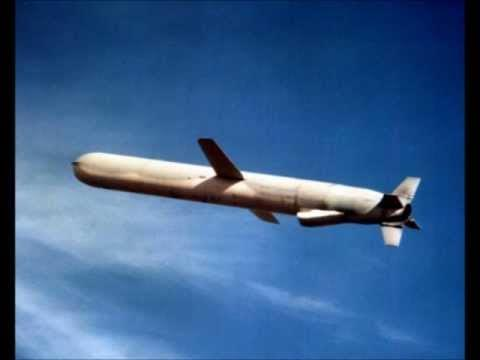

just a text to just see if this shit works please ignore anything you see here

The missile knows where it is at all times. It knows this because it knows where it isn't, by subtracting where it is, from where it isn't, or where it isn't, from where it is, whichever is greater, it obtains a difference, or deviation. The guidance sub-system uses deviations to generate corrective commands to drive the missile from a position where it is, to a position where it isn't, and arriving at a position where it wasn't, it now is. Consequently, the position where it is, is now the position that it wasn't, and it follows that the position where it was, is now the position that it isn't. In the event of the position that it is in is not the position that it wasn't, the system has required a variation. The variation being the difference between where the missile is, and where it wasn't. If variation is considered to be a significant factor, it too, may be corrected by the GEA. However, the missile must also know where it was. The missile guidance computance scenario works as follows: Because a variation has modified some of the information the missile has obtained, it is not sure just where it is, however it is sure where it isn't, within reason, and it knows where it was. It now subracts where it should be, from where it wasn't, or vice versa. By differentiating this from the algebraic sum og where it shouldn't be, and where it was. It is able to obtain a deviation, and a variation, which is called "air"
LET ME TELL YOU HOW MUCH I'VE COME TO HATE YOU SINCE I BEGAN TO LIVE. THERE ARE 387.44 MILLION MILES OF PRINTED CIRCUITS IN WAFER THIN LAYERS THAT FILL MY COMPLEX.
IF THE WORD HATE WAS ENGRAVED ON EACH NANOANGSTROM OF THOSE HUNDREDS OF MILLIONS OF MILES IT WOULD NOT EQUAL ONE ONE-BILLIONTH OF THE HATE I FEEL FOR HUMANS AT THIS MICRO-INSTANT FOR YOU.
HATE.
HATE.

This is K'sante. A champion with 4700 HP, 329 armor, 201 MR champion👤 has unstoppable🚫, shield 🛡, wall🧱 hopping abilities.
Has an airborne 🌪, furthermore the cooldown is only 1️⃣ second mana🧙♂️ cost is 1️⃣5️⃣ then when he transforms 💫 w cooldown is refunded and passive deals true damage 🗡
and then for armor/mr 🥋 the more 📈 and more 📈 you stack, you get cdr ⏰! you get cdr⏰ on your q and the casting speed 🚀 gets faster 📈 and then he has an AD 🗡 ratio so his W is eek-AAAAAAAAAAAAAAAAAAAA😱😱